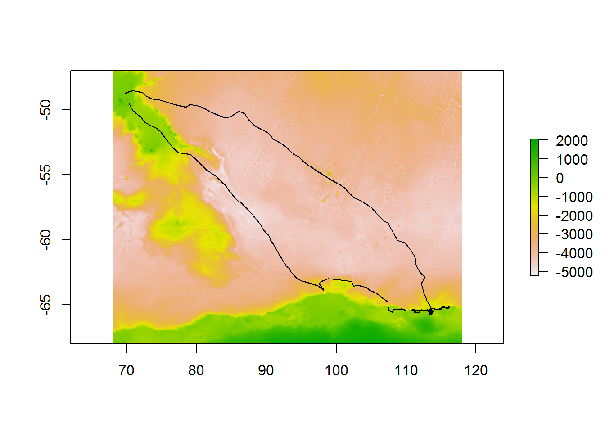
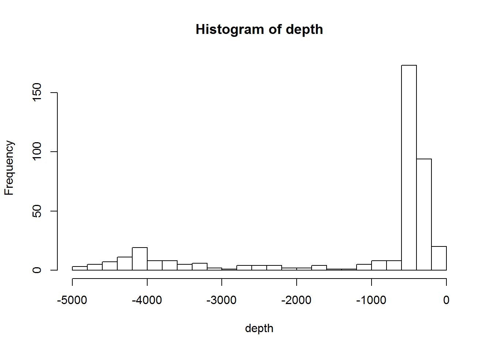
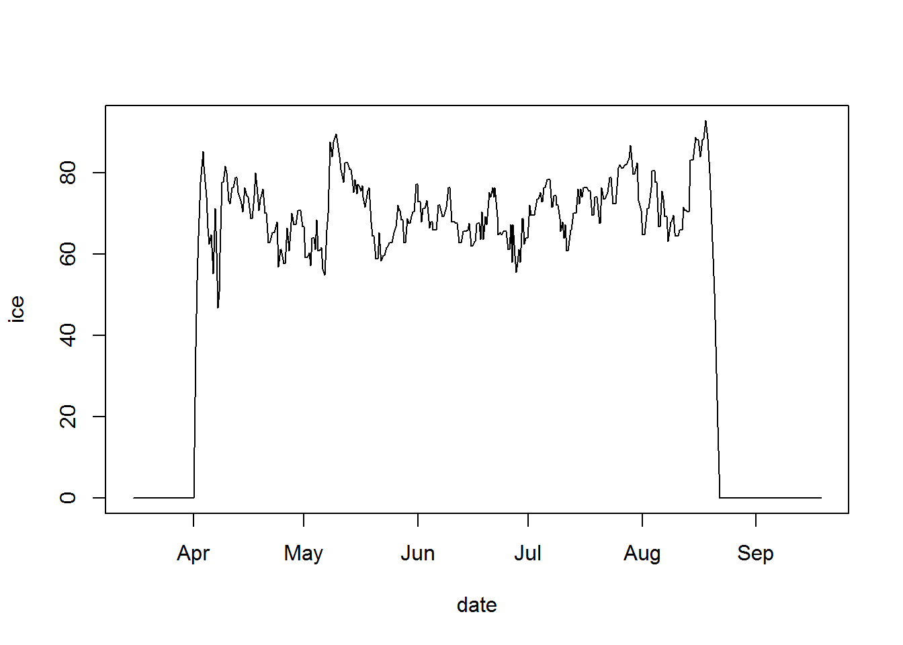

9 Environmental data
9.1 Bowerbird/blueant
Very commonly, we want to know about the environmental conditions at our points of interest. For the remote and vast Southern Ocean these data typically come from satellite or model sources. Some data centres provide extraction tools that will pull out a subset of data to suit your requirements, but often it makes more sense to cache entire data collections locally first and then work with them from there.
bowerbird provides a framework for downloading data files to a local collection, and keeping it up to date. The companion blueant package provides a suite of definitions for Southern Ocean and Antarctic data sources that can be used with bowerbird. It encompasses data such as sea ice, bathymetry and land topography, oceanography, and atmospheric reanalysis and weather predictions, from providers such as NASA, NOAA, Copernicus, NSIDC, and Ifremer.
Why might you want to maintain local copies of entire data sets, instead of just fetching subsets of data from providers as needed?
- many analyses make use of data from a variety of providers (in which case there may not be dynamic extraction tools for all of them),
- analyses might need to crunch through a whole collection of data in order to calculate appropriate statistics (temperature anomalies with respect to a long-term mean, for example),
- different parts of the same data set are used in different analyses, in which case making one copy of the whole thing may be easier to manage than having different subsets for different projects,
- a common suite of data are routinely used by a local research community, in which case it makes more sense to keep a local copy for everyone to use, rather than multiple copies being downloaded by different individuals.
In these cases, maintaining local copies of a range of data from third-party providers can be extremely beneficial, especially if that collection is hosted with a fast connection to local compute resources (virtual machines or high-performance computational facilities).
Install from GitHub:
remotes::install_github("AustralianAntarcticDivision/blueant")And load the package before use.
library(blueant)9.1.1 Available data sets
First, we can see the available data sets via the sources function.
srcs <- blueant::sources()
## the names of the first few
head(srcs$name)## [1] "NSIDC SMMR-SSM/I Nasateam sea ice concentration"
## [2] "NSIDC SMMR-SSM/I Nasateam near-real-time sea ice concentration"
## [3] "NSIDC passive microwave supporting files"
## [4] "Nimbus Ice Edge Points from Nimbus Visible Imagery"
## [5] "Artist AMSR-E sea ice concentration"
## [6] "Artist AMSR-E supporting files"## the full details of the first one
srcs[1, ]## # A tibble: 1 x 16
## id name
## <chr> <chr>
## 1 10.5067/8GQ8LZQVL0VL NSIDC SMMR-SSM/I Nasateam sea ice concentration
## description
## <chr>
## 1 "Passive microwave estimates of sea ice concentration at 25km spatial re~
## doc_url source_url
## <chr> <list>
## 1 http://nsidc.org/data/nsidc-0051.html <chr [1]>
## citation
## <chr>
## 1 Cavalieri, D. J., C. L. Parkinson, P. Gloersen, and H. Zwally. 1996, upd~
## license
## <chr>
## 1 Please cite, see http://nsidc.org/about/use_copyright.html
## comment
## <chr>
## 1 This data source may migrate to https access in the future, requiring an~
## method postprocess authentication_note user password
## <list> <list> <chr> <chr> <chr>
## 1 <named list [5]> <list [0]> <NA> <NA> <NA>
## access_function data_group collection_size
## <chr> <chr> <dbl>
## 1 raadtools::readice Sea ice 109.1.2 Usage
Choose a directory into which to download the data. Usually this would be a persistent directory on your machine so that data sets downloaded in one session would remain available for use in later sessions, and not need re-downloading. A persistent directory could be something like c:\data\ (on Windows), or you could use the rappdirs package (the user_cache_dir function) to suggest a suitable directory (cross-platform).
Here we’ll use the c:/data/cache directory:
my_data_dir <- "/data/cache"Select the data source that we want:
data_source <- sources("Southern Ocean marine environmental data")Note that it’s a good idea to check the dataset size before downloading it, as some are quite large! (Though if you are running the download interactively, it will ask you before downloading a large data set).
data_source$collection_size ## size in GB## [1] 0.1And fetch the data:
result <- bb_get(data_source, local_file_root = my_data_dir, verbose = TRUE)##
## Mon Sep 02 08:46:36 2019
## Synchronizing dataset: Southern Ocean marine environmental data
## Source URL https://data.aad.gov.au/eds/4742/download
## --------------------------------------------------------------------------------------------
##
## this dataset path is: c:\data\cache/data.aad.gov.au/eds/4742
## building file list ... done.
## downloading file 1 of 1: https://data.aad.gov.au/eds/4742/download ... file unchanged on server, not downloading.
## decompressing: c:\data\cache/data.aad.gov.au/eds/4742/download.zip ... no new files to extract (not overwriting existing files) ... done.
##
## Mon Sep 02 08:46:38 2019 dataset synchronization complete: Southern Ocean marine environmental dataNow we have a local copy of our data. The sync can be run daily so that the local collection is always up to date - it will only download new files, or files that have changed since the last download. For more information on bowerbird, see the package vignette.
The result object holds information about the data that we downloaded:
result## # A tibble: 1 x 5
## name id
## <chr> <chr>
## 1 Southern Ocean marine environmental data 10.26179/5b8f30e30d4f3
## source_url status files
## <chr> <lgl> <list>
## 1 https://data.aad.gov.au/eds/4742/download TRUE <tibble [61 x 3]>The result$files element tells us about the files:
head(result$files[[1]])## # A tibble: 6 x 3
## url
## <chr>
## 1 https://data.aad.gov.au/eds/4742/download
## 2 <NA>
## 3 <NA>
## 4 <NA>
## 5 <NA>
## 6 <NA>
## file
## <chr>
## 1 "c:\\data\\cache\\data.aad.gov.au\\eds\\4742\\download.zip"
## 2 c:/data/cache/data.aad.gov.au/eds/4742/environmental_layers
## 3 c:/data/cache/data.aad.gov.au/eds/4742/environmental_layers/chla_ampli_a~
## 4 c:/data/cache/data.aad.gov.au/eds/4742/environmental_layers/chla_max_all~
## 5 c:/data/cache/data.aad.gov.au/eds/4742/environmental_layers/chla_mean_al~
## 6 c:/data/cache/data.aad.gov.au/eds/4742/environmental_layers/chla_min_all~
## note
## <chr>
## 1 existing copy
## 2 decompressed
## 3 decompressed
## 4 decompressed
## 5 decompressed
## 6 decompressedThese particular files are netCDF, and so could be read using e.g. the raster or ncdf4 packages. However, different data from different providers will be different in terms of grids, resolutions, projections, variable-naming conventions, and other facets, which tends to complicate these operations. In the next section we’ll look at the raadtools package, which provides a set of tools for doing common operations on these types of data.
9.2 RAADtools
The raadtools package provides a consistent interface to a range of environmental and similar data, and tools for working with them. It is designed to work data with collections maintained by the bowerbird/blueant packages, and builds on R’s existing ecosystem of packages for working with spatial, raster, and multidimensional data.
Here we’ll use two different environmental data sets: sea ice and water depth. Water depth does not change with time but sea ice is provided at daily time resolution.
First download daily sea ice data (from 2013 only), and the ETOPO2 bathymetric data set. ETOPO2 is somewhat dated and low resolution compared to more recent data, but will do as a small dataset for demo purposes. This may take a few minutes, depending on your connection speed:
src <- bind_rows(
sources("NSIDC SMMR-SSM/I Nasateam sea ice concentration", hemisphere = "south", time_resolutions = "day",
years = 2013),
sources("ETOPO2 bathymetry"))
result <- bb_get(src, local_file_root = my_data_dir, clobber = 0, verbose = TRUE, confirm = NULL)##
## Mon Sep 02 08:46:38 2019
## Synchronizing dataset: NSIDC SMMR-SSM/I Nasateam sea ice concentration
##
## [... output truncated]Now load the raadtools package and tell it where our data collection has been stored:
library(raadtools)
set_data_roots(my_data_dir)Let’s say that we have some points of interest in the Southern Ocean — perhaps a ship track, or some stations where we took marine samples, or as we’ll use here, the track of an elephant seal as it moves from the Kerguelen Islands to Antarctica and back again (Data from IMOS 2018[^1], provided as part of the SOmap package).
data("SOmap_data", package = "SOmap")
ele <- SOmap_data$mirounga_leonina %>% dplyr::filter(id == "ct96-05-13")Define our spatial region of interest and extract the bathymetry data from this region, using the ETOPO2 files we just downloaded:
roi <- round(c(range(ele$lon), range(ele$lat)) + c(-2, 2, -2, 2))
bx <- readtopo("etopo2", xylim = roi)And now we can make a simple plot of our our track superimposed on the bathymetry:
plot(bx)
lines(ele$lon, ele$lat)
The real power of raadtools comes from its extraction functions. We can extract the depth values along our track using the raadtools::extract() function. We pass it the data-reader function to use (readtopo), the data to apply it to (ele[, c("lon", "lat")]), and any other options to pass to the reader function (in this case, specifying the topographic data source topo = "etopo2"):
ele$depth <- raadtools::extract(readtopo, ele[, c("lon", "lat")], topo = "etopo2")Plot the histogram of depth values, showing that most of the track points are located in relatively shallow waters:
with(ele, hist(depth, breaks = 20))
This type of extraction will also work with time-varying data — for example, we can extract the sea-ice conditions along our track, based on each track point’s location and time:
ele$ice <- raadtools::extract(readice, ele[, c("lon", "lat", "date")])## points outside the ice grid will have missing ice values, so fill them with zeros
ele$ice[is.na(ele$ice)] <- 0
with(ele, plot(date, ice, type = "l"))
9.3 Other useful packages
the PolarWatch project aims to enable data discovery and broader use of high-latitude ocean remote sensing data sets. The dedicated ERDDAP server (https://polarwatch.noaa.gov/erddap) is accessible to R users with rerddap.
rsoi downloads the most up to date Southern Oscillation Index, Oceanic Nino Index, and North Pacific Gyre Oscillation data.
satellite reflectance data are a common basis for estimating chlorophyll-a and other phytoplankton parameters at ocean-basin scales. Global products are widely available; however, Southern-Ocean specific algorithms are likely to provide better estimates in these regions. croc implements the Johnson et al. (2013) Southern Ocean algorithm.
more broadly, oce provides a wide range of tools for reading, processing, and displaying oceanographic data, including measurements from Argo floats and CTD casts, sectional data, sea-level time series, and coastline and topographic data.
fda.oce provides functional data analysis of oceanographic profiles for front detection, water mass identification, unsupervised or supervised classification, model comparison, data calibration, and more.
distancetocoast provides “distance to coastline” data for longitude and latitude coordinates.
geodist for very fast calculation of geodesic distances.